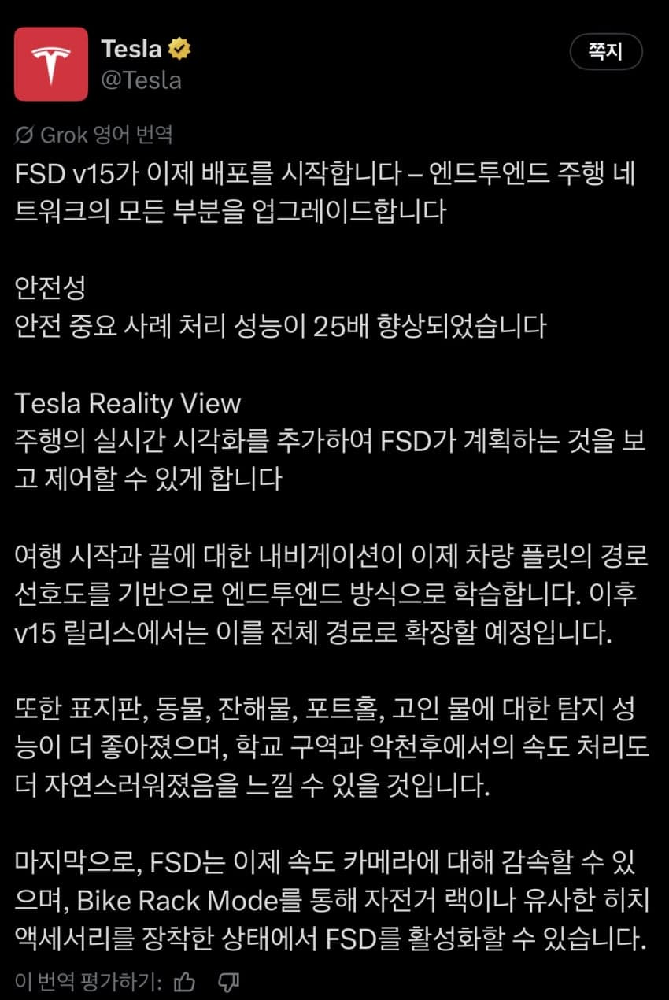
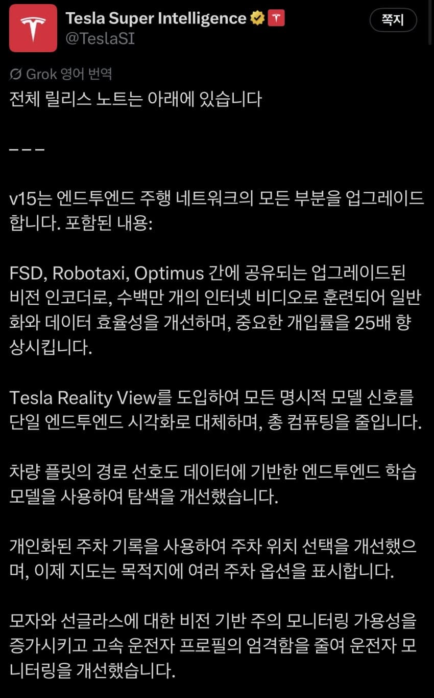
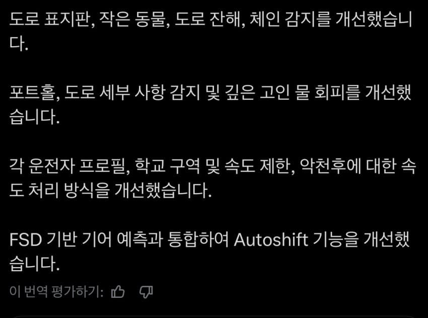
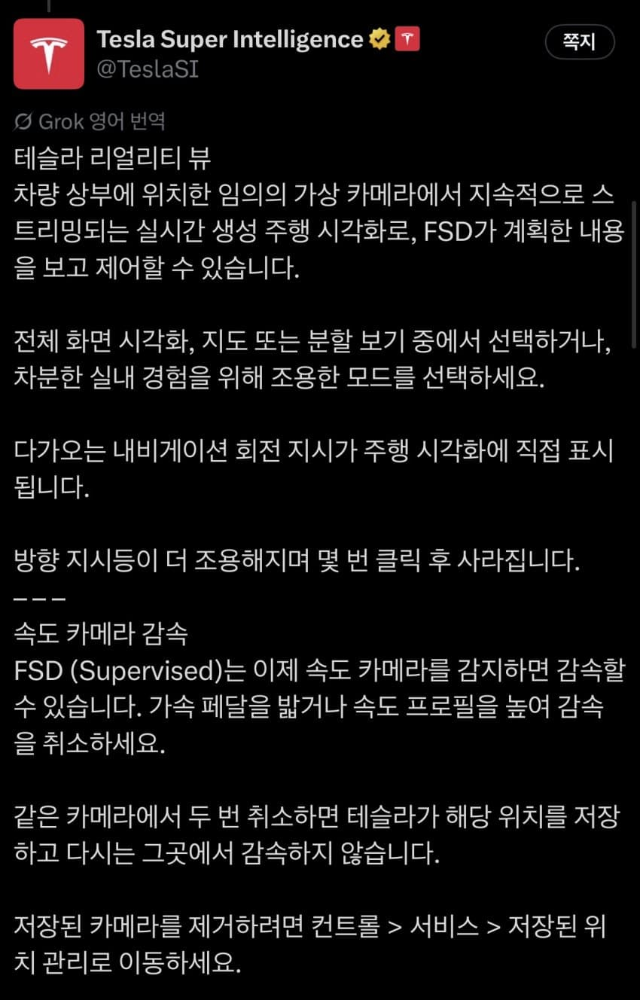
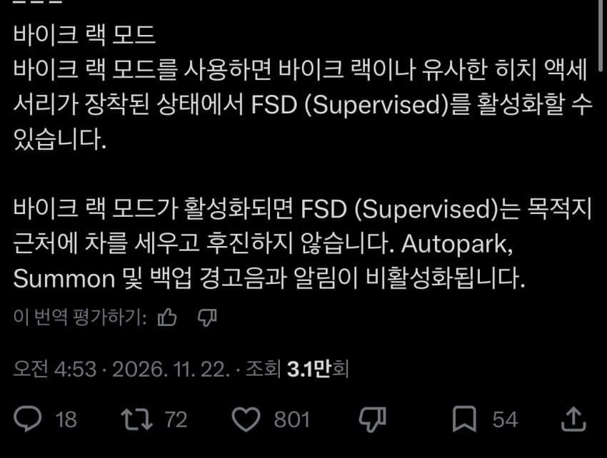
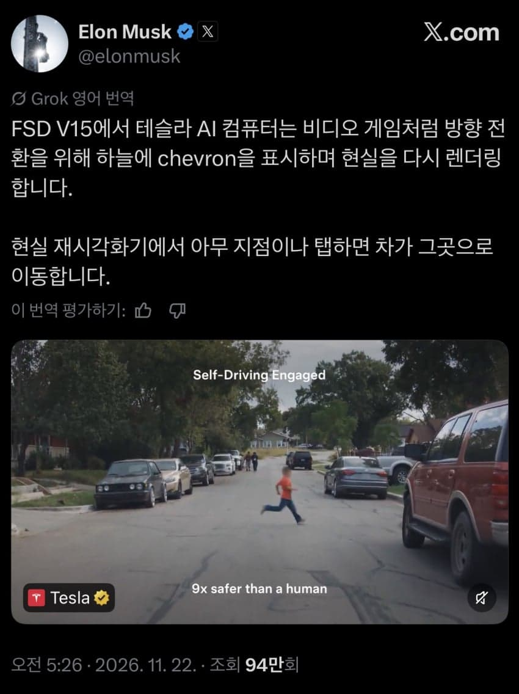
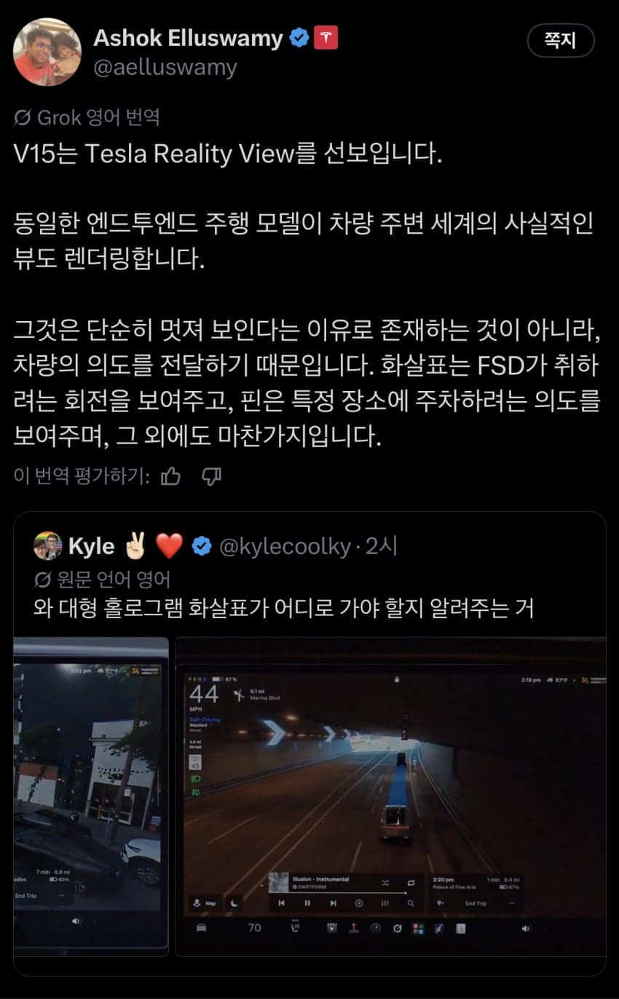
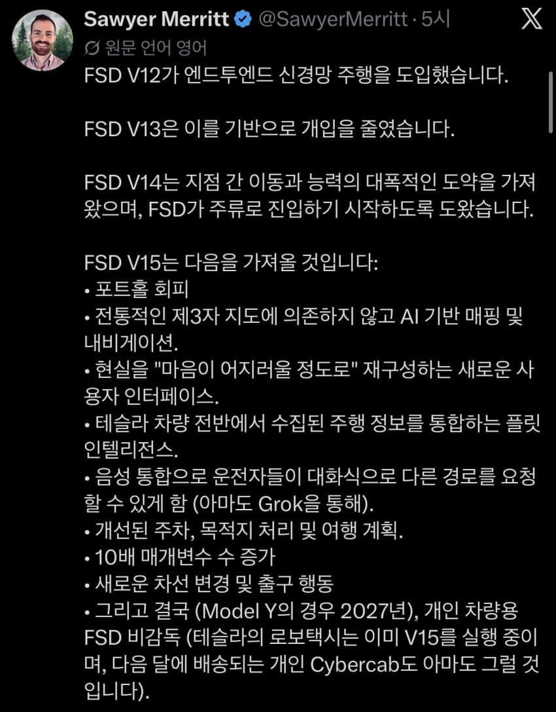
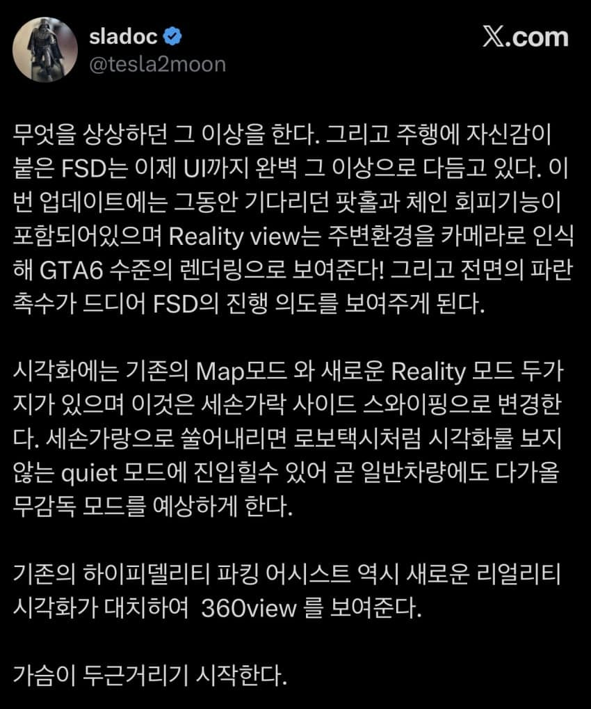
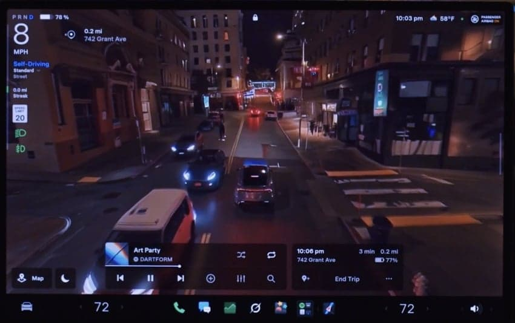
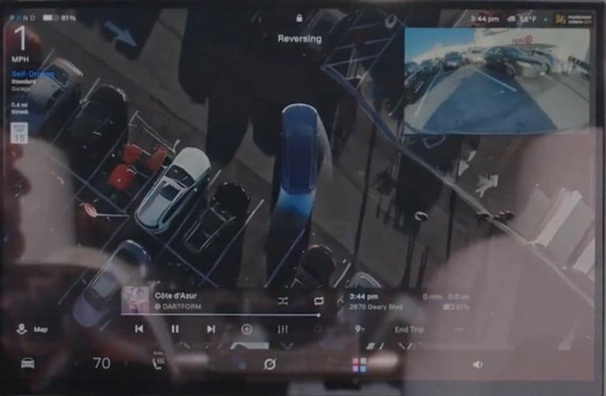
모델s 사고 싶다
- dc official App











댓글
수집 당시 댓글 203개
ㅇㅇ · 11.22 22:00:27
ㅇㅇ · 11.22 22:00:31
· ㅇㅇ · 11.22 22:01:02
· ㅇㅇ · 11.22 22:09:59
· ㅇㅇ · 11.22 23:45:54
· ㅇㅇ · 11.23 13:40:55
ㅇㅇ · 11.22 22:00:41
· ㅇㅇ · 11.23 12:04:17
· ㅇㅇ · 11.23 17:51:09
ㅇㅇ · 11.22 22:00:49
Ai부정행위기업이다 불매운동드게제~~
· ㅇㅇ · 11.22 22:01:24
Ai이니까이것도부정행위라소리치겠죠
어린이사랑 · 11.22 22:01:04
ㅇㅇ · 11.22 22:01:32
· ㅇㅇ · 11.23 14:21:18
ㅇㅇ · 11.22 22:01:38
ㅇㅇ · 11.22 22:02:23
· ㅇㅇ · 11.22 22:03:02
한국인= ai쓰면 부정행위
ㅇㅇ · 11.22 22:03:39
ㅇㅇ · 11.22 22:04:23
· ㅇㅇ · 11.22 22:12:40
· ㅇㅇ · 11.23 13:03:26
ㅇㅇ · 11.22 22:04:46
· ㅇㅇ · 11.22 22:05:11
한국인= ai쓰면 부정행위
· ㅇㅇ · 11.23 05:12:48
ㅇㅇ · 11.22 22:06:16
ㅇㅇ · 11.22 22:06:23
ㅇㅇ · 11.22 22:07:02
ㅇㅇ · 11.22 22:07:47
ㅇㅇ · 11.22 22:09:20
레거시
공장썃따
내려라
ㅇㅇ · 11.22 22:10:59
· ㅇㅇ · 11.22 22:11:07
ㅇㅇ · 11.22 22:12:07
· ㅇㅇ · 11.23 09:38:23
ㅇㅇ · 11.22 22:13:07
ㅇㅇ · 11.22 22:13:49
· ㅇㅇ · 11.22 23:14:29
· ㅇㅇ · 11.22 23:32:52
ㅇㅇ · 11.22 22:14:42
dd · 11.22 22:22:18
· ㅇㅇ · 11.22 22:23:41
· ㅇㅇ · 11.22 22:26:01
· dd · 11.22 22:27:11
· ㅇㅇ · 11.22 22:28:37
· ㅇㅇ · 11.22 22:46:04
· dd · 11.22 22:46:43
· ㅇㅇ · 11.23 02:08:08
· ㅇㅇ · 11.23 12:57:55
히이잉 · 11.22 22:23:17
ㅇㅇ · 11.22 22:23:55
· ㅇㅇ · 11.22 22:28:44
· ㅇㅇ · 11.22 22:32:37
· ㅇㅇ · 11.22 22:40:34
ㅇㅇ · 11.22 22:30:55
· ㅇㅇ · 11.22 22:31:30
· Jasmin. · 11.22 22:35:51
· ㅇㅇ · 11.22 22:43:37
ㅇㅇ · 11.22 22:40:27
ㅇㅇ · 11.22 22:40:39
ㅇㅇ · 11.22 22:41:25
ㅇㅇ · 11.22 22:48:37
ㅇㅇ · 11.22 22:53:24
· 소설쟁이 · 11.23 00:05:01
ㅇㅇ · 11.22 22:53:34
유그유그 · 11.22 23:02:07
ㅇㅇ · 11.22 23:06:29
ㅇㅇ · 11.22 23:07:13
· 소설쟁이 · 11.23 00:05:23
삭제됨 · 11.22 23:22:26
· 소설쟁이 · 11.23 00:06:36
ㅇㅇ · 11.22 23:30:01
ㅇㅇ · 11.22 23:30:18
ㅇㅇ · 11.22 23:30:48
ㅇㅇ · 11.22 23:46:14
ㅇㅇ · 11.22 23:51:00
ㅇㅇ · 11.22 23:59:46
ㅇㅇ · 11.23 00:05:39
· ㅇㅇ · 11.23 00:05:51
· 소설쟁이 · 11.23 00:07:21
· ㅇㅇ · 11.23 20:33:33
ㅇㅇ · 11.23 00:21:14
ㅇㅇ · 11.23 00:55:53
ㅇㅇ · 11.23 01:12:04
ㅇㅇ · 11.23 01:39:25
ㅇㅇ · 11.23 01:47:24
ㅇㅇ · 11.23 02:11:26
ㅇㅇ · 11.23 02:11:29
ㅇㅇ · 11.23 03:02:49
ㅇㅇ · 11.23 04:02:22
ㅇㅇ · 11.23 04:41:01
ㅇㅇ · 11.23 05:59:30
· ㅇㅇ · 11.23 06:00:17
· ㅇㅇ · 11.23 06:00:51
· ㅇㅇ · 11.23 06:46:47
· ㅇㅇ · 11.23 13:14:36
ㅇㅇ · 11.23 08:04:53
ㅇㅇ · 11.23 08:24:13
ㅇㅇ · 11.23 08:29:56
ㅇㅇ · 11.23 13:42:39
ㅇㅇ · 11.23 15:43:20
ㅇㅇ · 11.23 17:06:30
천사다천사 · 11.22 07:54:05
楚覇王 項羽 · 11.22 21:46:11
봇치쟝 · 11.22 21:46:22
· ㅇㅇ · 11.22 21:46:49
DOOM · 11.22 21:46:55
ㅇㅇ · 11.22 21:48:00
· ㅇㅇ · 11.22 21:49:36
· ㅇㅇ · 11.22 22:29:49
ㅇㅇ · 11.22 21:48:04
かなたん · 11.22 21:49:24
ㅇㅇ · 11.22 21:51:05
ㅇㅇ · 11.22 21:51:07
ㅇㅇ · 11.22 21:51:25
밤율청 · 11.22 21:52:56
· ㅇㅇ · 11.22 21:55:13
· ㅇㅇ · 11.22 22:06:12
· ㅇㅇ · 11.22 22:09:22
· dorosi · 11.22 22:09:57
· ㅗㅗ · 11.22 22:22:38
· ㅇㅇ · 11.22 22:31:25
· Jasmin. · 11.22 22:33:49
· ㅇㅇ · 11.22 22:36:10
· 요약 · 11.22 22:36:40
· 요약 · 11.22 22:38:13
· 요약 · 11.22 22:38:47
· 요약 · 11.22 22:39:09
· ㅇㅇ · 11.22 22:39:22
ㅇㅇ · 11.22 21:53:02
ㅇㅇ · 11.22 21:54:05
ㅇㅇ · 11.22 21:54:54
· ㅇㅇ · 11.22 22:07:59
한국인= ai쓰면 부정행위
· 좌좡면한그륵뭐그런쇼망 · 11.22 22:43:54
d · 11.22 21:55:50
· ㅇㅇ · 11.22 22:36:24
· ㅇㅇ · 11.22 22:38:14
· ㅇㅇ · 11.22 22:55:51
ㅇㅇ · 11.22 21:56:04
· ㅇㅇ · 11.22 23:12:37
ㅇㅇ · 11.22 21:56:52
· ㅇㅇ · 11.22 21:57:44
ㅇㅇ · 11.22 21:57:06
Ai이니까이것도부정행위라소리치겠죠
· ㅇㅇ · 11.22 21:57:43
Ai부정행위기업이다 불매운동드게제~~
· ㅇㅇ · 11.22 21:58:04
Ai이니까이것도부정행위라소리치겠죠
· ㅇㅇ · 11.22 21:58:16
Ai부정행위기업이다 불매운동드게제~~
ㅇㅇ · 11.22 21:58:03
· ㅇㅇ · 11.22 21:59:47
ㅇㅇ · 11.22 21:58:05
· ㅇㅇ · 11.22 21:58:48
Ai이니까이것도부정행위라소리치겠죠
· ㅇㅇ · 11.22 21:58:53
Ai부정행위기업이다 불매운동드게제~~
· ㅇㅇ · 11.22 21:59:18
· ㅇㅇ · 11.22 22:03:04
· ㅇㅇ · 11.22 22:04:36
· ㅇㅇ · 11.22 22:11:08
· ㅇㅇ · 11.22 22:12:30
· ㅇㅇ · 11.22 22:16:30
· ㅇㅇ · 11.22 22:19:41
· ㅇㅇ · 11.22 22:21:30
· Jasmin. · 11.22 22:29:25
· Jasmin. · 11.22 22:29:36
· ㅇㅇ · 11.22 22:29:56
· ㅇㅇ · 11.22 22:30:26
· ㅇㅇ · 11.22 22:30:28
· ㅇㅇ · 11.22 22:30:51
· ㅇㅇ · 11.22 22:31:38
· ㅇㅇ · 11.22 22:33:47
· ㅇㅇ · 11.22 22:34:25
· ㅇㅇ · 11.22 22:37:46
· ㅇㅇ · 11.22 22:41:17
· ㅇㅇ · 11.22 22:41:42
· ㅇㅇ · 11.22 22:42:37
· ㅇㅇ · 11.22 22:45:19
· ㅇㅇ · 11.22 22:45:57
· ㅇㅇ · 11.22 22:50:14
· ㅇㅇ · 11.22 22:52:06
· ㅇㅇ · 11.22 22:56:57
· ㅇㅇ · 11.22 23:00:03
· ㅇㅇ · 11.22 23:01:57
· ㅇㅇ · 11.22 23:03:09
· ㅇㅇ · 11.22 23:07:37
· ㅇㅇ · 11.22 23:08:52
· ㅇㅇ · 11.22 23:11:24
· ㅇㅇ · 11.22 23:12:06
· ㅇㅇ · 11.22 23:12:16
· ㅇㅇ · 11.22 23:13:35
· ㅇㅇ · 11.22 23:14:36
· ㅇㅇ · 11.22 23:16:36
· ㅇㅇ · 11.22 23:17:00
· ㅇㅇ · 11.22 23:18:05
· ㅇㅇ · 11.22 23:19:51
· ㅇㅇ · 11.22 23:22:19
· ㅇㅇ · 11.22 23:23:34
· ㅇㅇ · 11.22 23:28:36
· ㅇㅇ · 11.22 23:34:45
· ㅇㅇ · 11.22 23:39:32
· ㅇㅇ · 11.23 10:33:44
· ㅇㅇ · 11.23 14:17:40
ㅇㅇ · 11.22 21:59:32
단! 한국은! 제외!
· ㅇㅇ · 11.22 22:04:24
한국인= ai쓰면 부정행위
ㅇㅇ · 11.22 21:59:45
겐쉰프 · 11.22 21:59:56
유체리 · 11.22 07:22:31
· ㅇㅇ · 11.22 21:59:21
Ai이니까이것도부정행위라소리치겠죠
· ㅇㅇ · 11.22 21:59:25
Ai부정행위기업이다 불매운동드게제~~